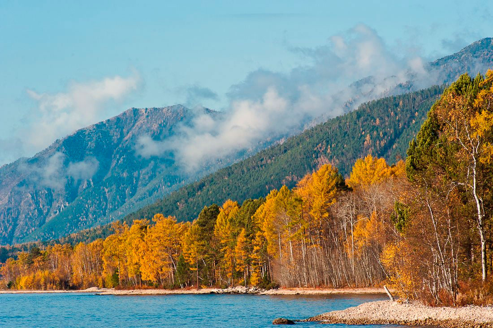
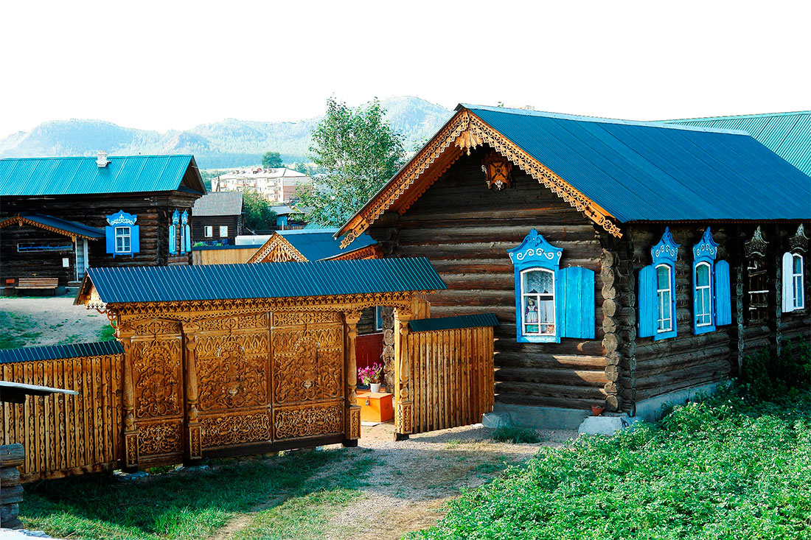
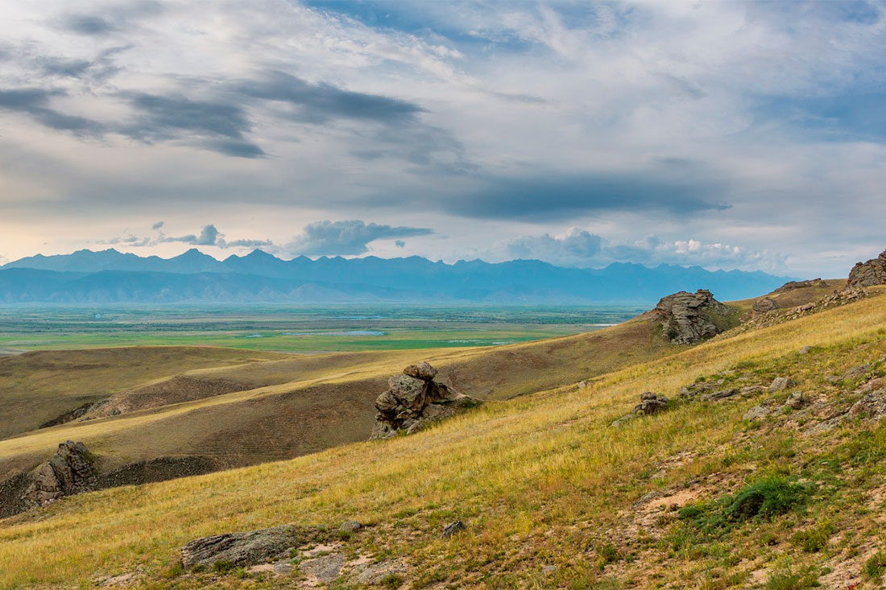
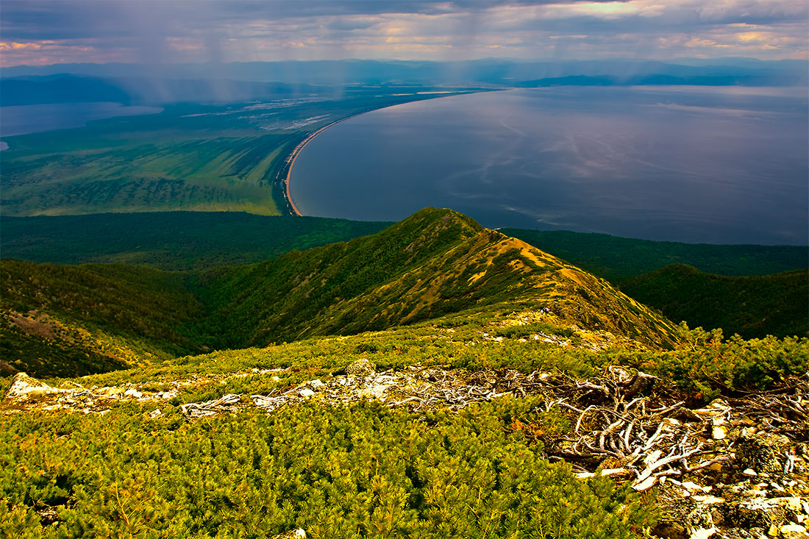
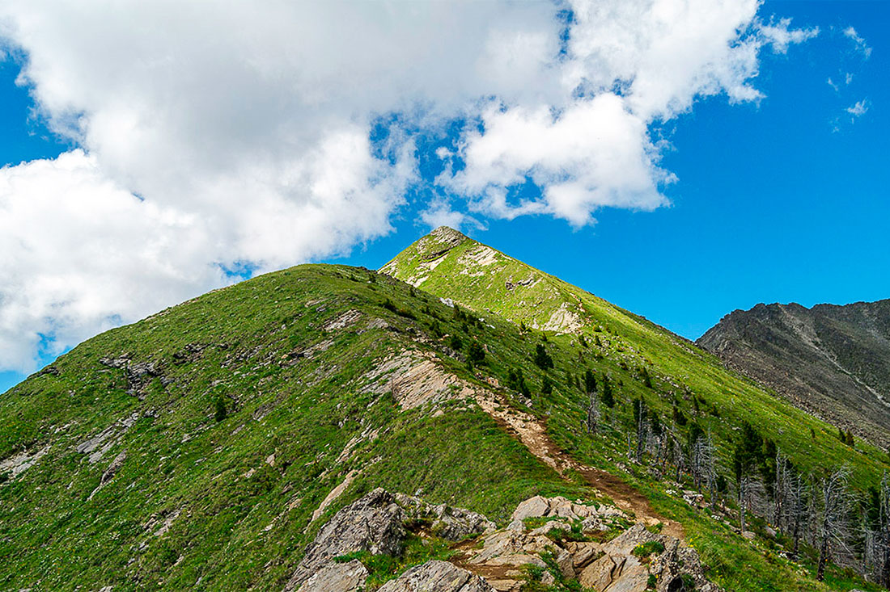
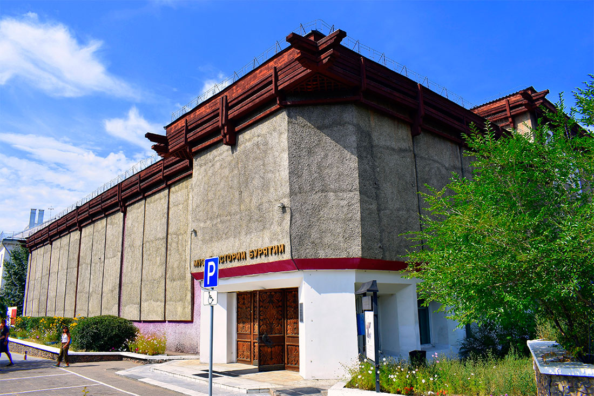
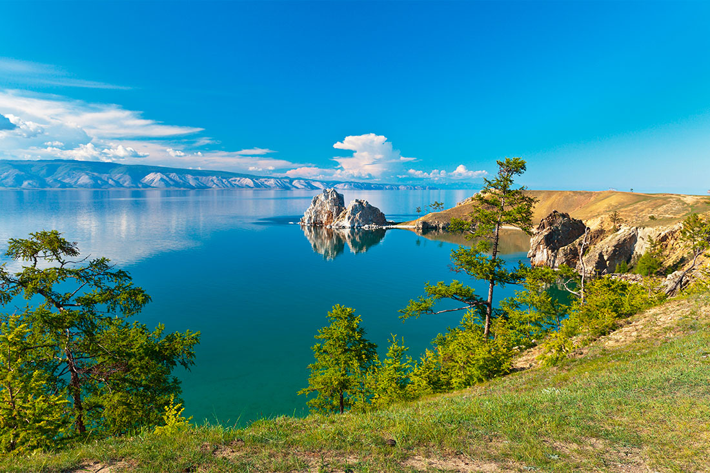

Иволгинский дацан "Хабын хурээ"
Религиозно-философские традиции Бурятии уходят корнями в глубь веков. На буддийский монастырь
Иволгинский дацан можно посмотреть в селе Верхняя Иволга, что расположенонедалеко от столицы Бурятии
Улан-Удэ. Многоцветные крыши этого храмового комплекса видны издалека: дацан встречает посетителей яркими
красками. Иволгинский дацан является объектом культурного наследия народов России и историческим памятником.
Удивительно, что дацан был возведен в сталинскую эпоху, когда в СССР массово разрушались культовые сооружения.
Храм открыт в 1945 году, в 50-е годы прошлого века был построен монастырский комплекс, а в 1991 году при дацане
создан Буддийский университет. С 2002 года в дацане находится священная реликвия – нетленное тело Хамбо-ламы Итигэлова.
Для всех посетителей здесь действуют правила буддийского этикета: нельзя поворачиваться спиной к скульптурам Будды,
показывать на них пальцами, громко разговаривать, курить и сквернословить.

Забайкальский национальный парк"
Национальный парк, полностью отвечающий рекомендациям ЮНЕСКО, был основан в 1986 году. В пределах парка
расположены Баргузинский хребет и Ушканьи острова. Этот архипелаг примечателен лежбищем нерпы – крупнейшим на
озере Байкал. Просторы парка являются местами обитания таежных птиц и животных, из которых около полусотни видов
внесены в Красную книгу России. Зачем посещать. По территории Забайкальского национального парка проложены 5
туристических троп. Один из пеших маршрутов, который тянется по полуострову Святой Нос, ведет на его высшую точку
– гору Маркова. С этой вершины открывается восхитительная круговая панорама на север Чивыркуйского залива,
архипелаг Ушканьи острова и живописные песчаные пляжи Баргузинского залива. В отвесных скалах полуострова
Святой Нос расположены гроты и пещеры. На территории парка выходят из-под земли три источника с минеральной водой.

Этнографический комплекс Тарбагатай
История этого села берет начало в 1710-е годы. После раскола Русской православной церкви и
проведения церковной реформы староверы подвергались гонениям. Многие старообрядцы были сосланы в Сибирь,
в том числе, в Бурятию. Несколько семей поселились в небольшой слободе, которая со временем стала одним из
крупнейших в Забайкалье старообрядческих сел. Зачем посещать. В Тарбагатае, где все пропитано культурой
старообрядчества, будто остановилось время. Жители села дружелюбно встречают туристов, желающих окунуться в
незнакомый мир староверов. За семейность и традицию селиться патриархальными общинами старообрядцев называют
«семейскими». Здесь бережно хранятся обряды и традиции, а для туристов устраиваются костюмированные представления.
В селе открыт музей «Элементы семейской старины».

Баргузинская долина
Неповторимая по своей красоте Баргузинская долина сегодня считается одним из перспективных туристических
направлений. На ее территории расположены Улюнский заказник и Джергинский заповедник. Зачем посещать.
Богатая природа, история и культура здешних мест привлекает любителей экотуризма и активного отдыха – пешего
туризма, альпинизма и рафтинга. В Баргузинской долине находятся природные достопримечательности и культовые места,
принадлежавшие различным племенам и народам. Здесь возвышается гора Барагхан – одна из святынь северного буддийского
мира. В этой местности расположено несколько историко-краеведческих музеев (в поселках Баргузин, Баянгол, Суво),
историко-этнографический музей в с. Улюн и экологический парк-музей в с. Максимиха.

Полуосторов Святой Нос
В Забайкальском национальном парке находится полуостров Святой Нос. Он является крупнейшим на озере Байкал.
Здесь растет густая тайга, бьют из-под земли горячие источники и водятся лесные звери – от ондатр до медведей.
В древности эти места считались священными, наполненными лесными духами, и использовались для проведения шаманских
обрядов. Зачем посещать. Полуостров Святой Нос будет интересен любителям дикой природы и уединенного отдыха вдали
от цивилизации. Рядом с ним расположен архипелаг Ушканьи острова – место безмятежного отдыха байкальских нерп.
На полуострове, который соединяется с «материком» перешейком, расположено несколько небольших поселений.

Пик Любви
Пиком Любви называют вершину хребта Тункинские Гольцы, имеющую высоту 2 412 метров. Расположена гора,
с которой связана красивая старинная легенда, неподалеку от поселка Аршан. Это одно из популярных мест
восхождения экстремалов. Чтобы подняться на вершину в теплое время года, понадобится около 5 часов. Зимой
восхождение займет гораздо больше времени. Зачем посещать. К вершине горы проложена тропа, но, несмотря на это,
подъем считается очень утомительным, хоть и крайне интересным. С вершины открываются живописные виды на Тункинскую
долину и бескрайнюю тайгу. Да и во время восхождения ваш фотоальбом не раз пополнится снимками окружающих красот.
Кроме туристов на гору стремятся попасть влюбленные. Существует поверье, что пара, которая поднялась на Пик Любви,
никогда не расстанется.

Музей истории Бурятии
Этот музей, основанный в 1923 году, расположен в Улан-Удэ – столице Бурятии. Его двери открыты для всех туристов,
желающих больше узнать о республике. Экспозиция поделена на несколько тематических блоков. Они посвящены этнографии
коренных жителей края – эвенков и бурятов, русскому населению и истории Бурятии в разные эпохи. Зачем посещать.
Фонды музея насчитывают свыше 100 тысяч предметов. Среди экспонатов – археологические находки, сделанные на
территории республики, монеты и медали, фотографии и документы. Интерес представляют живопись и графика,
религиозная коллекция и культовые предметы, народные костюмы и маски, а также редкие книги, в числе которых
старинный Атлас тибетской медицины.

Озеро Байкал
На границе республики с Иркутской областью расположено озеро Байкал – самое глубокое на планете.
Оно является главной природной достопримечательностью Бурятии и входит в список Всемирного наследия ЮНЕСКО.
Этот огромный «колодец» считается одним из самых древних водоемов в мире и вмещает 19% планетарных запасов
чистейшей пресной воды. В озере обитают рыбы и животные, которые встречаются только в этих местах, а на берегах
бьют горячие источники. Зеркальная гладь Байкала окружена чарующими красотами сибирской природы. Весной дно озера
видно даже через 40-метровую толщу воды. Летом воды Байкала отдают синевой, а осенью становятся зеленоватыми.
Зимой озеро завораживает удивительными пейзажами и прозрачными ледяными глыбами, которые лопаются с оглушительным
треском. На Байкале находятся три десятка островов, популярных среди любителей экологического туризма.